GPS与摄像识别装置
关键技术: 三次样条插值
利用计算机智能视觉，智能捕获萝卜茎叶位置，高精度规划设备前进路径
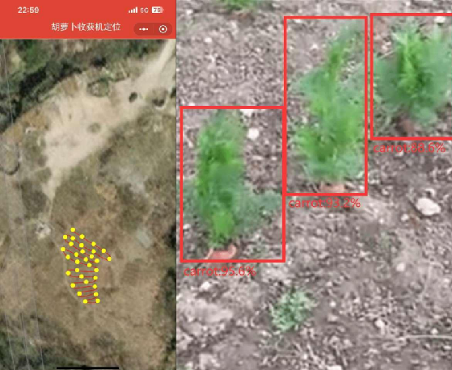
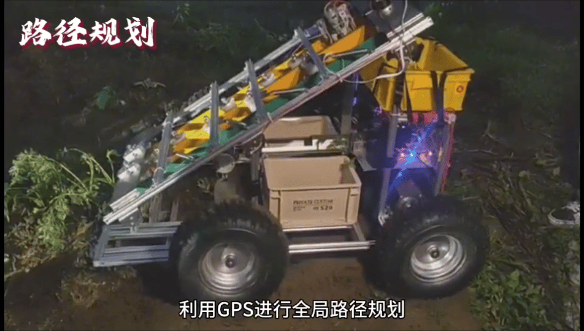
扶缨器
3D打印技术
扶缨器旋转，使茎叶从倒伏状态转变为直立状态。步进电机可根据实际精确调整，确保拢缨效果最佳化。
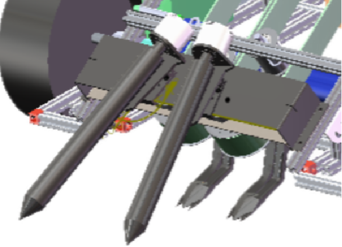
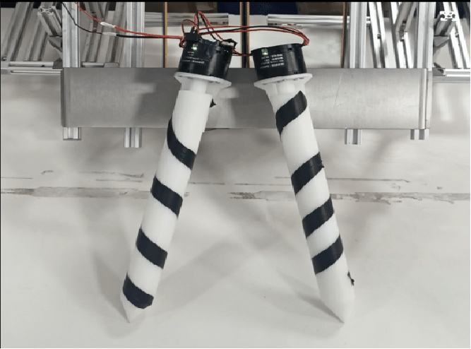
夹持、运输
皮带压紧装置
为拔取胡萝卜提供充足摩擦力，弹簧链接板两端分别连接动轮与定轮，
将弹簧弹力进行转化，定轮为皮带提供支撑力。
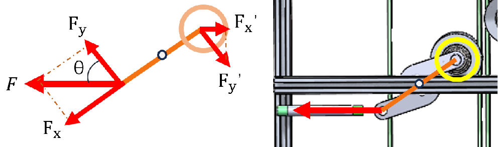
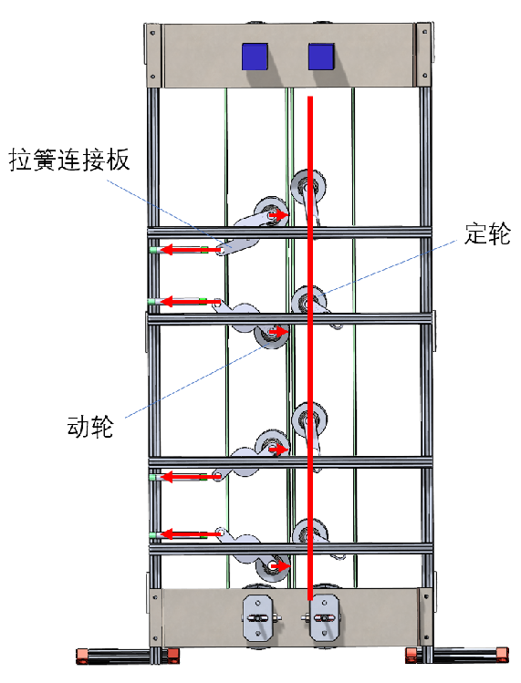
夹持、运输
皮带压紧装置示意
其张紧力度可调,动轮和定轮相互作用,保持皮带的张紧,实现萝卜的夹持与运输。
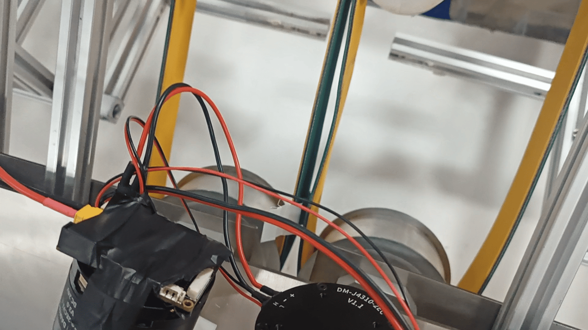
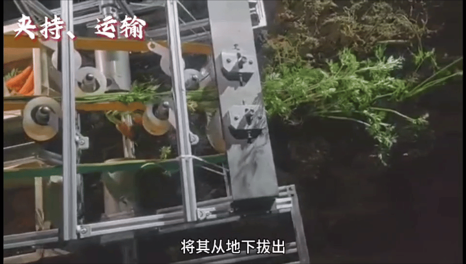
夹持、运输
夹持角度调节装置
夹持角度可调，可适应多种类萝一成果长度，以及种植高度
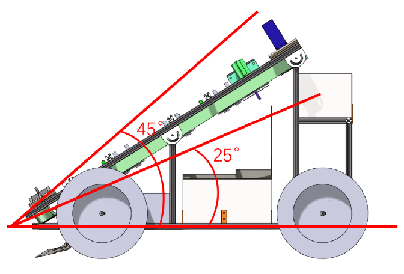
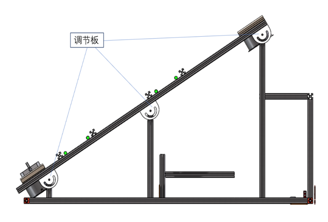
切割
旋转切割刀片
待萝卜传送至切割电机处，实现萝卜茎叶分离，萝卜受自身重力掉落至萝卜 收集盒内。
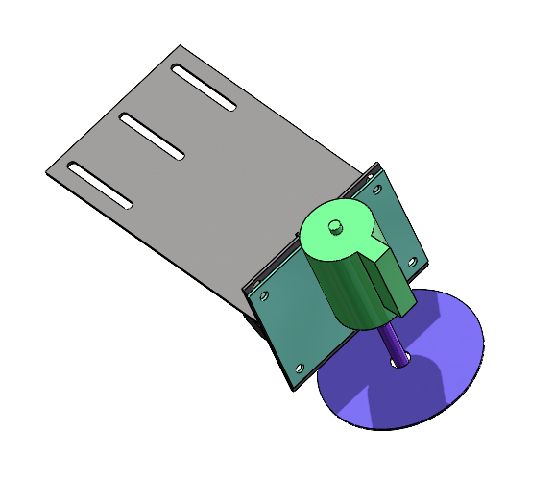
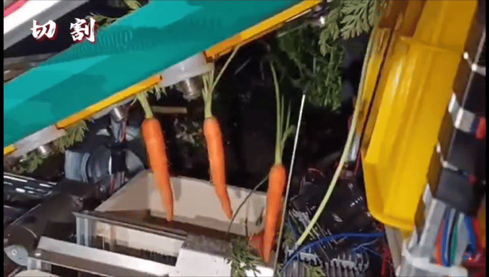
自动打包
自动化打包一体盒
盒子侧面附着PI加热膜,步进电机自动前进,将打包袋封口,侧面锯齿步进电机前进,将打包带
分开,实现自动化。加热膜外部添加隔热层与704图层,具有防水隔热性能,延长设备使用寿命。
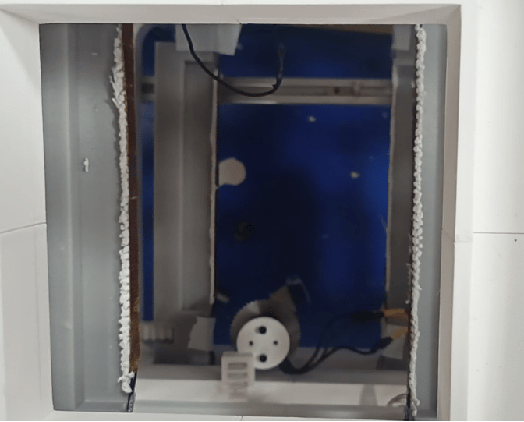
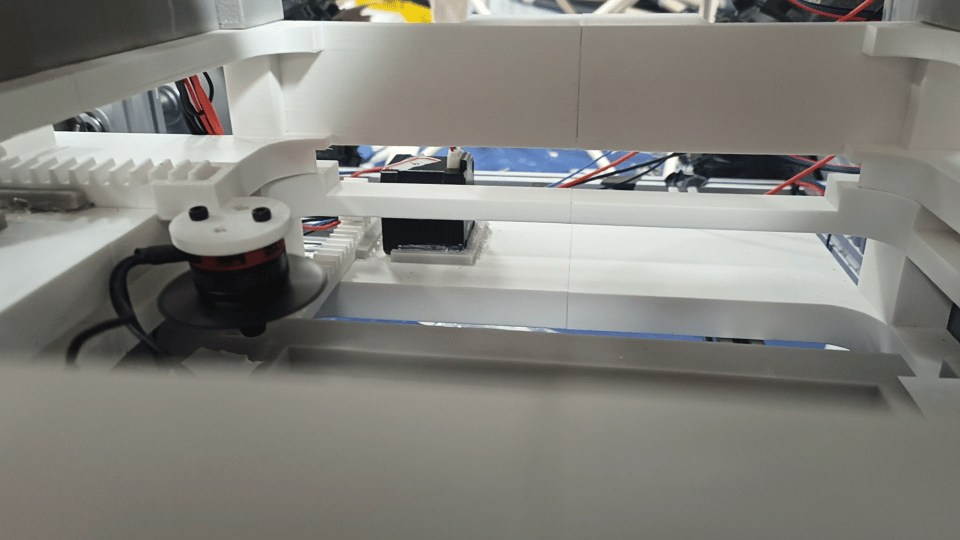
茎叶收集
茎叶尾端收集
茎叶将持续上输,于末端落入茎叶收集盒,最终实现萝卜自动化收集。
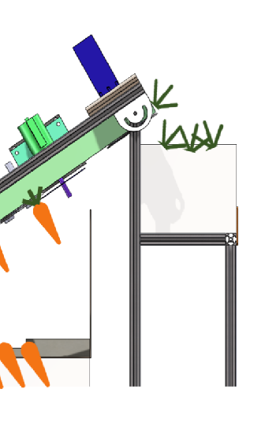
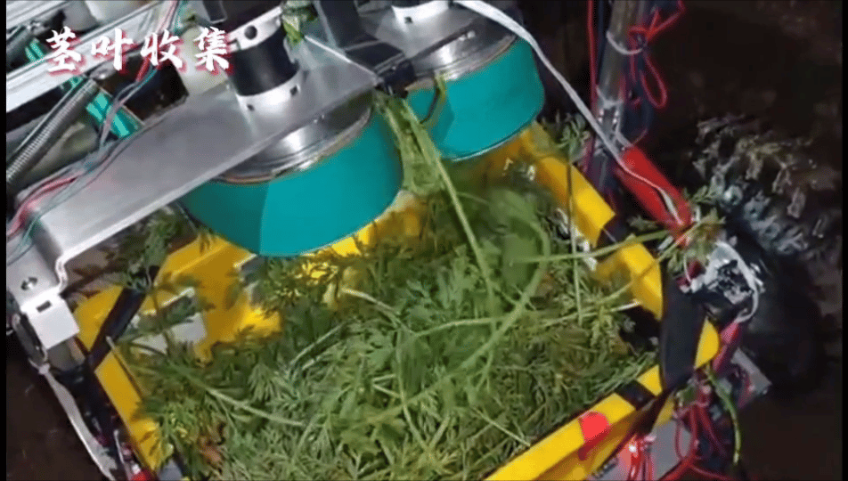